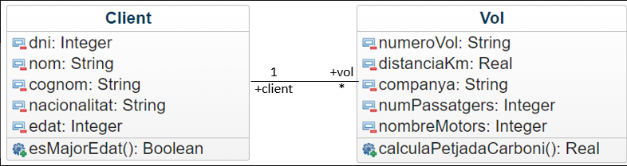

Modifica les classes Client i Vol, perquè responguin al diagrama de classes de la imatge.
Fes un programa que tingui programades totes les opcions: (Cada opció pot ser un botó diferent)
- Crear client/a.
- Eliminar client/a.
- Crear vol d'un client/a.
- Mostra la mitjana d'edat dels clients majors d'edat.
- Calcular petjada de carboni d'un client (és la suma del CO₂ de tots els seus vols)
- Calcular petjada de carboni mitjà de tots els clients
A tenir en compte:
- En crear un client, aquest no haurà de tenir cap vol "associat".
- A l'App només volem tenir un array de clients, no de vols. Els vols s'han de guardar dintre dels clients.
- El diagrama UML mostrà les propietats i mètodes mínims que han de tenir les classes, però pots crear-ne més si és necessari.
